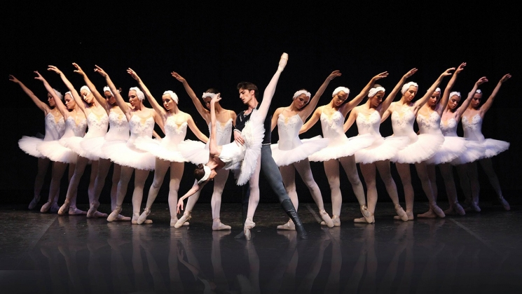

CONTACTO
ENSEÑANZAS
Y MAS.
La Danza Clásica, Danza Académica o Ballet, es una forma concreta de danza, que cuenta con distintas técnicas y movimientos específicos, basados en el control total y absoluto del cuerpo y debiéndose enseñarse desde temprana edad. Se desarrolla, fundamentalmente, en Italia y Francia en el siglo XVII, logrando una gran profesionalización, en 1661, gracias a la fundación de la Academie Royal de Danse (actual escuela de la Ópera de Paris), bajo el reinado de Luis XIV.
Durante el siglo XIX, tuvo su mayor desarrollo, a través de dos etapas bien diferenciadas. Primero con el Romanticismo, donde se baila por primera vez en puntas, destacando ballets como “La Sílfide” o “Giselle” y, más tarde, con el Clasicismo, cuando Rusia pasa al primer plano de la danza clásica gracias al gran maestro y coreógrafo Marius Petipa; creador de cientos de ballets, entre los que destacan: “La Bella Durmiente”, “El Lago de los Cisnes” y “El Cascanueces”.